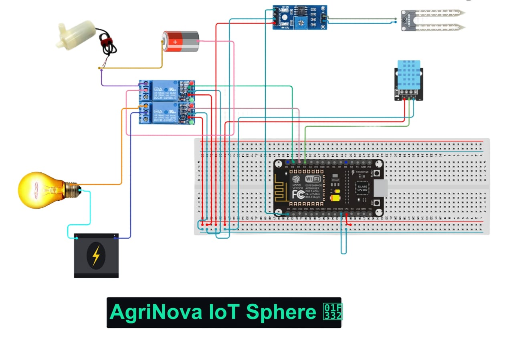

Introduction
The IoT irrigation project automates water usage by monitoring soil moisture and environmental conditions efficiently
Working Principle
The soil moisture sensor accurately detects soil moisture levels, and when they fall below a predefined threshold, the system automatically activates the water pump to irrigate plants. Integrated with the ESP8266 Wi-Fi module, users can seamlessly monitor and control the system remotely through a web interface, mobile app, or voice commands via Amazon Alexa or Google Assistant.

Components Used
- ESP8266 (NodeMCU)
- Soil Moisture Sensor
- DHT11 (Tempreature and Humidity)
- Water Pump
- Two-Channel Relay Module
- AC Bulb
Applications
- Remote Monitoring and Voice Control
- Efficient Water Usage and Conservation
- Affordable Technology for Irrigation
- Smart Assistant Integration Compatibility